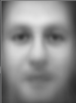
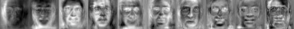
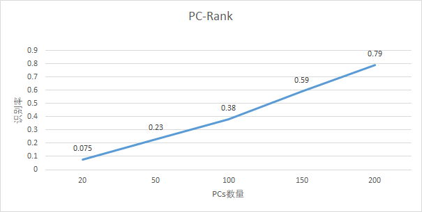

自己用opencv实现EigenFace 人脸识别的训练与识别、与重构过程。
实验目的和要求 自己写代码实现EigenFace 人脸识别的训练与识别、与重构过程，要求如下：
假设每张⼈脸图像只有一张人脸，且两只眼睛位置已知（即可人工标注给出）。每张图像的眼睛位置存在相应目录下的㇐个与图像文件名相同但后缀名为txt的⽂本文件⾥，文本文件中用一行、以空格分隔的4个数字表示，分别对应于两只眼睛中⼼在图像中的位置；
实现三个程序过程，分别对应训练与识别、重构。
自己构建一个人脸库（至少40个，包括自己），课程主页提供一个AT&T人脸库可选用。
不能直接调用OpenCV里面与Eigenface相关的一些函数，所有关键函数需要自己实现。
特征值与特征向量求解函数可以调用SDK;
实验原理 Eigenface人脸识别实现步骤：
对训练集内所有人脸图像作归一化处理；
通过PCA计算获得一组特征向量(特征脸)。通常一百个特征向量就足够；
将每幅人脸图像都投影到由该组特征脸张成的 子空间中，得到在该子空间坐标；
对输入的一幅待测图像，归一化后，将其映射到特征脸子空间中。然后用某种距离度量来描 述两幅人脸图像的相似性，如欧氏距离。
预处理
确定模板
对灰度值做归一化
通常我们使用两种方法来增强图片的对比度：
直方图均衡化
OpenCV提供了一个易用的函数，用于直方图均衡化处理。
1 2 void equalizeHist (InputArray src, OutputArray dst)
实现原理：一个完全均衡的直方图，意味着所有箱子包含的像素数量是相同的。其中一个必要条件就是，50%像素的强度值小于128，25%像素的强度值小于64，依次类推。
直方图拉伸
直方图拉伸让像素尽可能分布在[0,255]的范围之内。
训练过程 PCA原理 PCA全名为主成分分析，其主要目的就是寻找一个矩阵，然后把原来的一组带有相关性的矩阵映射到寻找到的那个矩阵中，达到降维的目的。
一般的，如果我们有M个N维向量，想将其变换为由R个N维向量表示的新空间中，那么首先将R个基按行组成矩阵A，然后将向量按列组成矩阵B，那么两矩阵的乘积AB就是变换结果，其中AB的第m列为A中第m列变换后的结果。
这句话就相当于找到了一个R行N列矩阵，然后乘一个N行M列矩阵，这样就得到了一个R行M列矩阵（其中R<=N），达到降维的目的。其中M和N的含义为，M可以代表样本个数，而N代表每个样本的特征个数，所以最终结果就是把原来N个特征变为了R个特征，达到降维目的。
实现过程
构建样本合集。读入MxN大小的人脸，并把图片矩阵转换为1xMN大小的矩阵。计总共读入$K$张人脸，那最后将所有1xMN的矩阵合并后，我们得到了kxMN的矩阵$T$。
对矩阵$T$计算矩阵的均值向量，我们称均值向量为训练人脸集的平均脸。对矩阵$T$减去其平均脸，我们能得到每个人脸对于平均脸的差异。
计算协方差矩阵S 的特征值和特征向量。每一个特征向量的维数与原始图像的一致，因此可以被看作是一个图像。因此这些向量被称作特征脸。他们代表了图像与均值图像差别的不同方向。
通常来说，这个过程的计算代价很高。对于一个NxN（比如100x100）维的图像来说，上述直接计算其特征向量，其协方差矩阵可以达到10000x10000，需要耗费大量的计算时间。因此有了如下的简单计算。
如果训练图像的数量小于图像的维数比如$(M<N^2)$，那么起作用的特征向量只有$M-1$个而不是$N^2$个（因为其他的特征向量对应的特征值为0），所以求解特征向量我们只需要求解一个$N*N$的矩阵。每个特征向量还原成像素排列就成为特征脸。
但是在实际操作中发现，该方法会导致人脸重构的失败，不知是否是对于公式理解的不透彻，没有找到解决方法。
选择主成分。一个$D * D$的协方差矩阵会产生$D$个特征向量，每一个对应$M × N$图像空间中的一个方向。具有较大特征值的特征向量会被保留下来，一般选择最大的N个，或者按照特征值的比例进行保存，如保留前95%。
人脸识别 对于人脸样本$f$来说，我们需要做的就是将样本映射到特征脸集的空间上。公式为：
$y_f$是一组向量，表示在各个特征脸上，输入样本的权重。A为特征脸矩阵。
于此再求得训练人脸样本中，和测试样本差异最小的样本，一般使用欧氏距离来判断最短。此时我们认为此样本是所求的识别对象。
其中Ω为映射后的人脸样本，$Ω_k$是训练集中的某张人脸。
人脸重构 在用特征脸对输入人脸样本进行标志得到权重向量后，我们也可以通过权重向量和特征脸来进行输入样本的人脸的重构。
有：
则：
人脸重构的效果和使用特征脸的张数有关，一般来说，当人脸重构时使用的特征脸张数越多，结果与原输入图片越相近。
实验环境 实验具体实现 预处理与构建矩阵 构建人脸类，用于预处理（人眼对其，直方图均衡化）和将一张人脸图片输入成为MN*1的矩阵。
1 2 3 4 5 6 7 8 9 10 11 12 13 14 15 16 17 18 19 20 21 22 23 24 25 26 27 28 29 30 31 32 33 34 35 36 37 38 39 class Face (): /*省略*/ def __init__ (self, file_path, eyes_path ): self.load_eyes(eyes_path) self.file = file_path self.eye = eyes_path def load_eyes (self, file_path ): with open (file_path, "r" ) as f: string = f.read() a = string.split() self.x1 = int (a[0 ]) self.y1 = int (a[1 ]) self.x2 = int (a[2 ]) self.y2 = int (a[3 ]) def transform (self ): image = cv.imread(self.file, cv.IMREAD_GRAYSCALE) point_x = (self.x1 + self.x2) / 2 point_y = (self.y1 + self.y2) / 2 angle = math.atan(float (self.y1 - self.y2) / float (self.x1 - self.x2)) * 180 / PI trans = cv.getRotationMatrix2D((point_x, point_y), angle, 1.0 ) trans[0 ][2 ] += 55 - point_x trans[1 ][2 ] += 30 - point_y image = cv.warpAffine(image, trans, image.shape) transform_pic = cv.resize(image, IMAGE_SIZE) hist = cv.equalizeHist(transform_pic) self.vect = hist.reshape(hist.size, 1 ) return self.vect
1 2 3 4 5 6 7 8 9 10 11 12 13 14 15 16 17 18 19 20 21 22 23 24 25 26 27 def createDatabase (path ): global T for i in range (1 , train_num + 1 ): person_path = path + '/s' + str (i) for j in range (1 , file_num + 1 ): face_path = person_path + '/' + str (j) + '.pgm' eyes_path = person_path + '/' + str (j) + '.txt' faces = Face(face_path, eyes_path) T.append(faces.transform()) face_list.append(faces) path_own = path + '/s41' for j in range (1 , file_num + 1 ): face_path = path_own + '/' + str (j) + '.jpg' eyes_path = path_own + '/' + str (j) + '.txt' faces2 = Face(face_path, eyes_path) T.append(faces2.transform()) face_list.append(faces2) T = np.array(T) T = T.reshape(T.shape[0 ], T.shape[1 ]) return np.mat(T).T
训练 可视化界面：
可视化界面主要用于选择特征脸能量的百分比，从而确定使用多少张特征脸来进行识别。
1 2 3 4 5 6 7 8 9 10 11 12 13 14 15 16 17 18 19 20 def gui (): root = tk.Tk() root.title("c" ) root.geometry('500x300' ) l = tk.Label(root) l.config(text="选择能量百分比值" ) l.pack() s1 = tk.Scale(root, from_=0.1 , to=1 ,resolution=0.01 ,orient=tk.HORIZONTAL) s1.pack() def select (): f=s1.get() btn.pack_forget() example(f) root.mainloop() btn = tk.Button(root, text="开始训练" , command=lambda :select()) btn.pack() root.mainloop()
关于人脸训练集T，我们使用np.cov矩阵来得到其协方差矩阵。
由于速度问题和函数限制问题，我们统一将输入的图片全部修改为50*50的尺寸大小，从而获得更快的计算速度。
计算协方差矩阵的特征值和特征向量时，我们使用np.linalg.eigh函数。该函数返回两个对象，一个包含矩阵的特征值的一 维数组，以及一个对应的特征向量（以列为单位）的矩阵。相比于np.linalg.eig函数，np.linalg.eigh的好处是使用更加快速的方法。
1 2 3 4 5 6 7 8 9 10 11 12 13 14 15 16 17 18 19 20 21 22 23 24 25 26 27 28 29 30 31 32 33 34 35 36 37 mean = T.mean(axis=1 ) A = T - mean aver = mean.reshape(IMAGE_SIZE) aver = np.uint8(aver) cv.imwrite("meanface.jpg" , aver) meanface = cv.imread("meanface.jpg" ) cv.imshow("meanface" , meanface) cov = np.cov(T, rowvar=1 ) eigen_value, eigen_vect = np.linalg.eigh(cov) sorted = np.argsort(eigen_value[::-1 ]) eigen_value = eigen_value[sorted ] eigen_vect = eigen_vect[:, sorted ] energy_total = sum (eigen_value) energy_level = energy_f * energy_total energy = 0 for i in range (eigen_value.shape[0 ]): energy = energy + eigen_value[i] if energy > energy_level: break ; print ("PC_NUM" , i) PC_num = i eigenface = eigen_vect[:, 0 :PC_num] np.save('data.npy' , eigenface) np.save('mean.npy' , mean)
识别 可视化界面：
1 2 3 4 5 6 7 8 9 10 11 12 13 14 15 16 17 18 19 20 21 22 23 24 25 26 27 28 29 30 31 32 def gui (): root = tk.Tk() root.title("eigenface" ) root.geometry('500x300' ) def select (): filename = tkinter.filedialog.askopenfilename() if filename != '' : s = filename im = Image.open (s) tkimg = ImageTk.PhotoImage(im) l.config(image=tkimg) btn1.config(command=lambda : select2(filename)) btn1.config(text="开始识别" ) btn1.pack() root.mainloop() def select2 (filename ): btn1.pack_forget() example(filename) root.mainloop() btn = tk.Button(root, text="选择识别的图片" , command=select) btn.pack() btn1 = tk.Button(root) l = tk.Label(root) l.pack() root.mainloop()
numpy 库可以很方便地计算两点$(x1, x2)$的距离，使用 numpy 中求范数的方法np.linalg.norm函数 实现:
1 np.linalg.norm(x1-x2, ord =None , axis=None , keepdims=False )
其中各参数分别为（需要更改的是前两个）：
x1-x2：两个点（向量）各个维度上的差
ord：求哪一种距离，对应 p pp ，默认为 2(欧氏距离)
axis：取值 0 或 1，0 表示按列向量处理，求多个列向量的范数。默认为 0
keepding：是否保持矩阵的二维特性，默认为 False
利用np.linalg.norm函数我们可以计算与被测人脸最相近的人脸库内的脸。
1 2 3 4 5 6 7 8 9 10 11 12 13 14 15 16 17 18 19 20 21 22 23 24 25 26 27 28 29 30 31 32 33 34 35 36 37 38 39 40 41 42 43 44 45 46 47 eigenface = np.load('data.npy' ) mean = np.load('mean.npy' ) A=T-mean _, trainNumber = np.shape(eigenface) projectedImage = eigenface.T* (A) image = cv.imread(testImage, cv.IMREAD_GRAYSCALE) shape = image.shape face_test = Face(testImage, testImage[0 :len (testImage) - 4 ] + ".txt" ) testImageArray = np.mat(np.array(face_test.transform())) difference_img = testImageArray - mean recongize_img = eigenface.T * (difference_img) distance = [] for i in range (0 , trainNumber - 1 ): q = projectedImage[:, i] temp = np.linalg.norm(recongize_img - q) distance.append(temp) minDistance = min (distance) index = distance.index(minDistance) num = divmod (index, file_num)[0 ] + 1 num0 = divmod (index, file_num)[1 ] + 1 if num == 41 : result_img = cv.imread('./AT' + '/s' + str (num) + '/' + str (num0) + '.jpg' , cv.IMREAD_GRAYSCALE) else : result_img = cv.imread('./AT' + '/s' + str (num) + '/' + str (num0) + '.pgm' , cv.IMREAD_GRAYSCALE) cv.imshow("result" , result_img) np.save("recongize.npy" ,recongize_img) return recongize_img, shape, result_img
重构 重构即识别的逆过程。
1 2 3 4 5 6 7 8 9 10 11 12 13 14 15 eigenface = np.load('data.npy' ) mean = np.load('mean.npy' ) face_num=10 recongize_img=np.load("recongize.npy" ) reconstruct = np.dot(eigenface , recongize_img) reconstruct = reconstruct + mean data_normal = cv.normalize(reconstruct, reconstruct, 255 , 0 , cv.NORM_MINMAX) result = data_normal.reshape(IMAGE_SIZE) result = np.uint8(result) cv.imshow("restruction" ,result) cv.imwrite("restruction.jpg" ,result)
实验结果分析 平均脸与前十张特征脸  平均脸
保存前十张特征脸的代码：
使用numpy库内hstack函数拼接每张特征脸。
1 2 3 4 5 6 7 8 9 10 img = eigenface[:, 0 ].reshape(IMAGE_SIZE) PCs=cv.normalize(img, None , 255 , 0 , cv.NORM_MINMAX, cv.CV_8UC1) for i in range (1 ,11 ): img=eigenface[:,i].reshape(IMAGE_SIZE) img=cv.normalize(img, None , 255 , 0 , cv.NORM_MINMAX, cv.CV_8UC1) PCs = np.hstack([PCs, img]) print (PCs) PCs = np.uint8(PCs) cv.imwrite("PCs_10.jpg.jpg" , PCs)

前十张特征脸
重构自己人脸图像
Rank识别率 实验中，使用一半人脸数据作为训练集，一半数据为测试集，测试PC值不同的时候的识别率。
其中，分别测试了PC值为20、50、100、150、200时的识别率。可以看出，随着PC值的增加，识别率逐步上升，当PC值在200时，识别率达到80%左右。

心得体会 这次实验原理比较数学，需要使用线性代数的知识，理解PCA中的降维的思想，通过转换基向量的形式使重要成分被当作向量的基向量，达到降维的目的，略有一些难度，需要多琢磨琢磨。
同时还发现一个问题是，当人脸集不进行预处理（即不进行人眼对齐）时，老师给的AT&T训练集的识别率更高，识别率能达到90%以上。猜测应该是因为在人眼对齐的过程中，存在对图片的旋转、裁剪，从而造成了图片中黑边的存在，而黑边的位置和占比又会影响欧氏距离的计算，从而影响了识别结果，反而让识别率降低。由于时间有限，暂时没有对该现象进行解决。